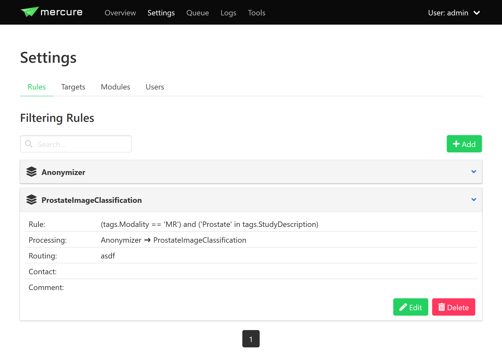
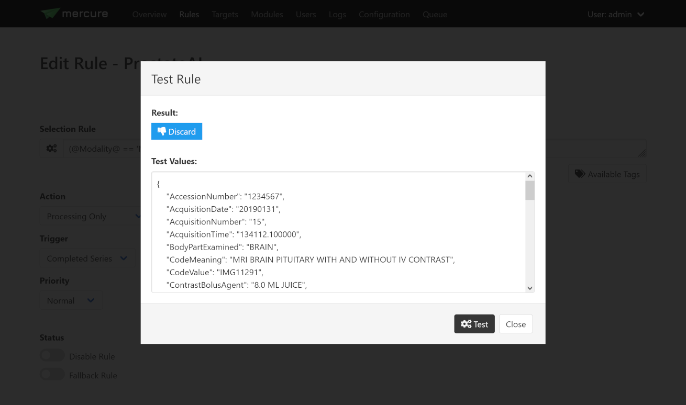
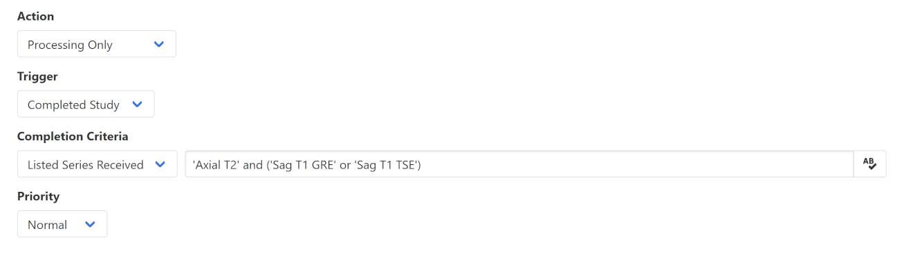
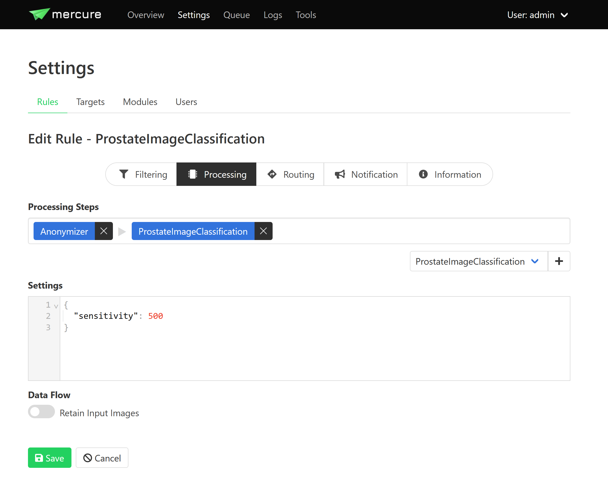
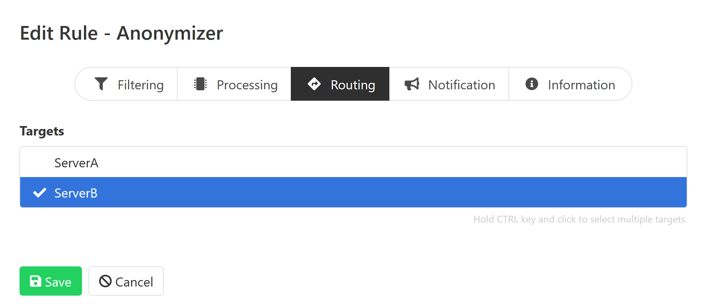
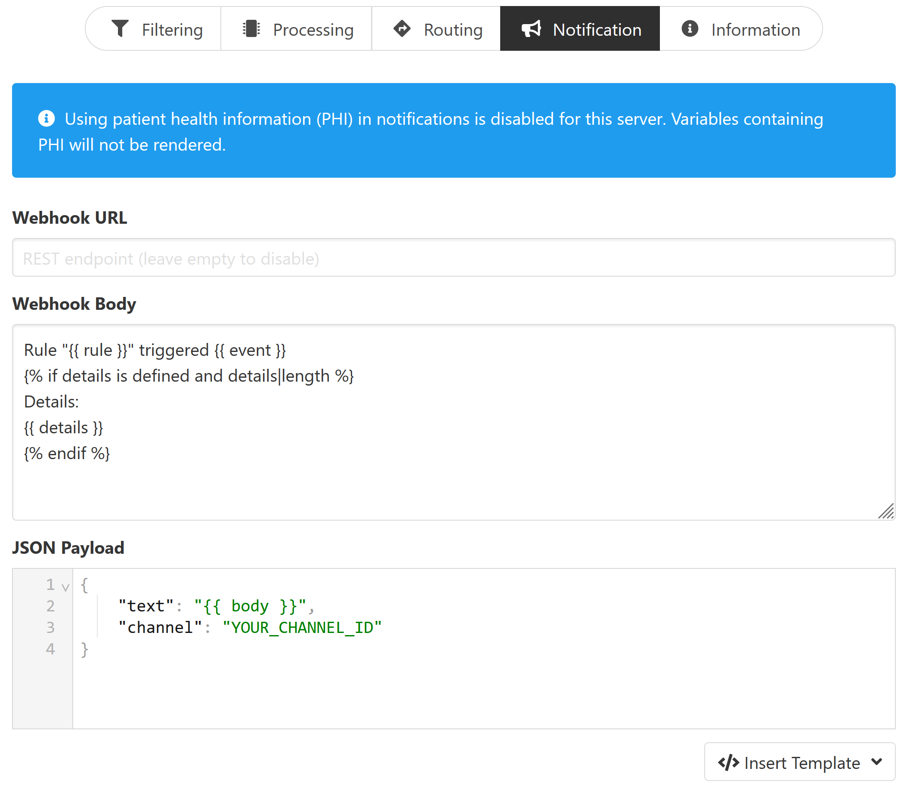
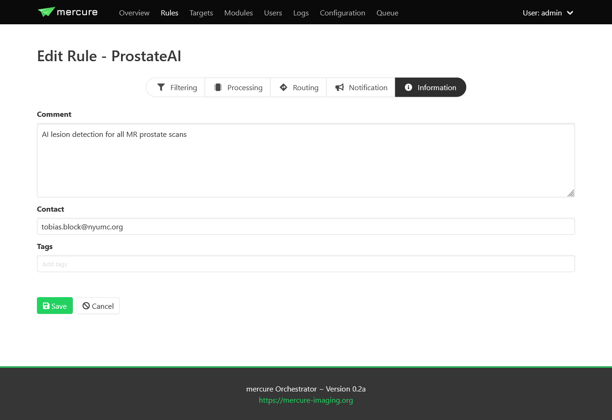

Rules
After you have configured your targets and processing modules, you can define rules that specify which DICOM series should be processed and to which targets the images should be dispatched. This can be done on the “Settings > Rules” page.
{kind=link}
It is not necessary to stop mercure services while defining new rules. The mercure service modules will automatically reload the new configuration when a rule has been added or modified. Click the “Add” button to create a new rule, or click on any of the existing rules and select “Edit” to modify it.
Filtering tab
All rules are evaluated whenever a new DICOM series has been received. The rules can use a set of DICOM tags extracted from the incoming DICOM files. To see the full list of DICOM tags available for writing rules, click the “Available Tags” button.
Tip
If you need additional tags that are currently not in the list, you can enable additional tags in system settings.
{kind=link}
A received series will processed if the selection rule evaluates to True, and it will be ignored if the rule evaluates to False. If none of the defined rules evaluates to True, the series will be discarded.
Selection rules are evaluated as Python expressions. Tags are available as properties on an object called “tags”, so for instance a rule like:
'CINE' in tags.SeriesDescription
will activate for all series that have the word “CINE” in the series description (e.g., “CINE 2ch”). If you only want to send series that are exactly called “CINE”, use the following rule instead
Warning
Older versions of Mercure used a syntax like 'CINE' in %SeriesDescription%. This syntax is still valid but should not be used in new rules.
tags.SeriesDescription == 'CINE'
This rule would not trigger if the series is called “CINE 2ch”. Multiple conditions can be combined using the “or” and “and” operators. Here, it is recommended to enclose every sub-condition with “( )”. By default, DICOM tags are treated as strings and are case-sensitive. If you want to make your condition case-insensitive, then append “.lower()” to the tag.
tags.SeriesDescription.lower() = 'cine'
This would trigger for series called “CINE” or “cine”. If you want to test for numerical value thresholds (e.g., if the slice thickness is lower than 2mm), you first need to convert the tag into a float by writing the tag inside “float()”. This then allows you to write a rule like
float(tags.SliceThickness) < 2.0
Testing Rules
To test a selection rule before activating it, click the icon with the cog wheels on the left side of input box. If you see a red icon in the dialog, the rule notation is invalid (the dialog will tell you why). If the rule is valid, the dialog will test if the rule would trigger if a DICOM series with the values shown in the lower part of the dialog would be received. You can modify these values and test if the rule reacts as expected.
{kind=link}
Hint
If you make a mistake while changing the test values (e.g., missing a quotation mark), you will see a yellow icon.
Rule Actions
If you have validated that your rule triggers as expected, select the desired Action from the drop-down list. The following options are available:
Action |
Meaning |
|---|---|
Routing |
The received series/study will be dispatched to a target (no processing) |
Processing & Routing |
The received series/study will be processed and afterwards dispatched |
Processing only |
The received series/study will be processed (without further dispatching) |
Notification only |
A notification will be triggered if the series/study is received (without neither processing or dispatching) |
Force discard |
The received series/study will be discarded (no other rules will be evaluated) |
Depending on the selected Action, the tabs “Processing” and “Routing” will become visible.
Rule Triggers
The Trigger control allows selecting when the action should be triggered.
If Completed Series is selected, mercure executes the action when a DICOM series has been received for which the rule evaluates to True. If multiple series from a patient study are received, these series are evaluated separately, and may trigger the same, different, or no rules.
If Completed Study is selected, all series for a given study are evaluated together. For example, an AI-based analysis algorithm might require multiple series with different contrast. On selection, an additional control Completion Criteria will appear, which allows selecting when the study should considered complete. Rules with this trigger are only evaluated when the study appears to be complete, and all the series will be routed or processed together.
{kind=link}
If List Series Received is selected, Mercure evaluates whether the study is complete based on whether specific series have been received using the SeriesDescription dicom tag. Here is an example expression that will consider the study complete if it receives a series with a SeriesDescription which contains “Axial T2” and another series that has either “SAG T1 GRE” or “Sag T1 TSE”:
'Axial T2' and ('Sag T1 GRE' or 'Sag T1 TSE')
This allows handling variability in the Series Descriptions, which often occurs in practice due to inconsistent configuration of imaging devices. Using the control “Action for Incomplete Studies”, it can be defined what should happen if not all of the required series were received (after the configurable timeout has been reached). With “Discard Study”, the incomplete study will be discarded. With “Process Incomplete Study”, the study will be processed with the series that have been received so far. With “Ignore Timeout and Wait”, mercure will continue to wait for arrival of the required series.
If the names of the expected series are unknown, the option “Timeout Reached” can be used instead, which collects image series belonging to the same study until no further series has been received for a definable timeout period (the timeout time can be set on the Configuration page). A disadvantage of this option is that the processing will be delayed until the timeout period has expired.
Priority
If the Priority control is set to “Urgent”, corresponding series or studies will be pushed to the front of the processing queue, while the setting “Off-Peak” enforces that the corresponding series will be only processed during off-peak hours. The latter can be helpful, for example, to prevent that computationally demanding research studies could delay clinically-needed cases during normal work hours.
Rules can be temporarily disabled by toggling the “Disable Rule” switch. In this case, the rule appears in grayed-out color in the rule list and it will be ignored during processing. By clicking the “Fallback Rule” switch, the current rule will be applied to all DICOM series for which no other rules have triggered. This allows defining a “default” rule.
Processing tab
For rules involving processing, the “Processing” tab can be used to select one or multiple processing modules. To add a module, select it in the dropdown box and press the “+” button to add it to the end of the module list. Each module will be executed in order, left to right. Generally, the output of each module will be used as the input for the next.
The “Settings” input provides rule-specific module settings. These settings will be merged with the global module settings and will overwrite global settings if the same keys occur in both. The settings have to be specified in JSON format. It depends on the individual module which settings are available. This information should be looked up from the module documentation.
If you are using multiple chained modules, this will be used for each of the modules.
{kind=link}
When selecting the “Retain input images” switch, the module chain will output both the processed images as well as the unprocessed input images. It depends on the individual application if this option is desired or not.
Important
The “Retain input images” option must not be used with modules that should remove confidential information from the data, such as DICOM anonymization modules.
Routing tab
For rules with dispatching, the “Routing” tab can be used to select the target(s) to which the DICOMs should be dispatched after finishing any processing modules.
{kind=link}
Notification tab
The “Notification” tab allows configuring webhook calls and emails that can be triggered at various points after a study has been received.
Webhook calls can be used to send notification messages into Slack, WebEx, Teams, or comparable messaging services. They can also be used for connecting other external services, for example, changing the color of a physical status light.
{kind=link}
The “Webhook Body” input is free text, which can be used eg to specify the contents of a Slack message. It supports the jinja2 template format.
The URL and payload for the webhook call need to be provided. Payload templates for Slack and WebEx can be inserted by pressing the button “Insert Template”. To obtain the webhook URL, you need to go into the configuration of your messaging service (e.g., Slack) and follow the instruction for setting up an incoming webhook. You can use "{{ body }}" to interpolate the “webhook body” as an escaped string.
You can enable PHI inside notifications by setting "phi_notifications": True in the configuration, which will make it available as phi_data.acc, phi_data.mrn and phi_data.patient_name.
Important
Be careful sending any sensitive information in the payload because the webhook call will, in most cases, be sent to an externally operated service.
The “Email Body” works much the same way as the “Webhook Body”. Select “HTML Content” if it should be sent as an HTML email, or leave it unselected to send it as plain-text email.
If either the email address or webhook url is blank, notifications will not be sent via that modality.
Information tab
The “Information” tab can be used to document the rule. The purpose of the rule can be written as free-text into the Comment field, and an email address can be written into the Contact field, so that it can be looked up at a later time why the rule was defined and who requested it. It is also possible to add tag attributes to the rule. These tags are not yet used for anything else, but might be used in future versions of mercure for filtering purpose and access control.
{kind=link}